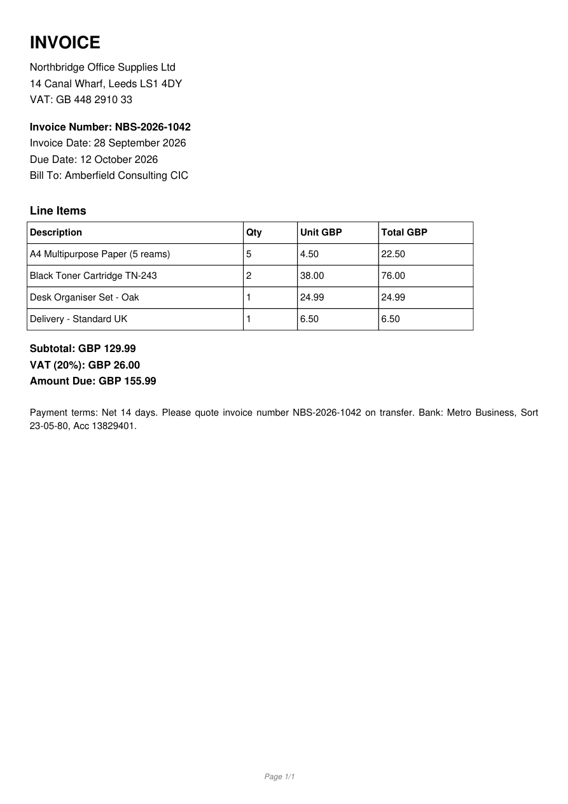

Capability proof · not a priced offer
PDF/Scan → Editable Word — Sample Conversion
Demonstration using a synthetic sample, not client work.
Fake company names and invented invoice content only. No buyer files were used.
Local open-source workflow: detect digital vs scan → extract (text layer or Tesseract OCR) → reconstruct editable .docx → flag uncertain OCR for manual checks. No paid OCR/API in this demo.
Before / after
Source PDF
Synthetic invoice (digital PDF)

Converted DOCX (HTML preview)
Editable Word structure
Loading preview…
What was preserved
Structure
Headings & paragraphs
Document title and section labels become editable Word headings/paragraphs.
Table
Line-item table
Invoice line items reconstructed as an editable Word table (digital path).
Data
Dates, totals, references
Invoice number, dates, VAT figures, and bank references carried into the DOCX.
Integrity
No invented passages
Unreadable or low-confidence OCR is flagged for manual verification rather than guessed.
Limitations (honest)
- Not a claim of perfect accuracy on every file — ordinary clean digital text did well on our synthetic corpus; scans need a human QA pass.
- Handwriting, complex magazines, equations, and unreadable scans are out of v1 scope.
- Scan/image-only PDFs may keep table text as paragraphs (re-form the table manually if needed).
- Layout is rebuilt for editability, not pixel-perfect visual cloning.
- This page is a capability demonstration only — no price, checkout, or paid service landing.
Related WordPress maintenance tools: Update & Safety Check · Emergency Repair · Quick Fix